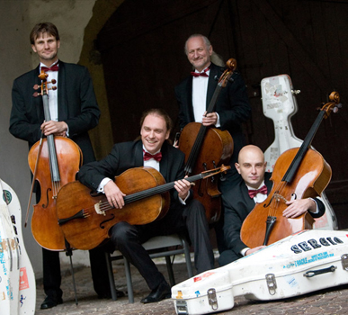
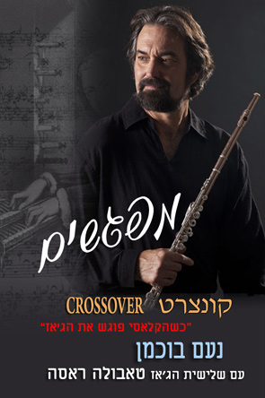

|
Rastrelli Cello Quartet |
||
|
 |
|
|
|
A
singularly unique ensemble, the Rastrelli Cello Quartet has been
thrilling audiences with their renderings of non-traditional programming
since 2002.Kira
Kraftzoff-founder and artistic director, Kirill
Timofeev, Misha
Degtjareffand Sergio
Drabkin formed the
ensemble with a mission to perform music "between the genres", and
their widely varied programs mix comfortably works by Bach, Saint-Saens
and Tchaikovsky with that of George Gershwin, Dave Brubeck and Leroy
Anderson. The name of the Quartet is taken from the
eighteenth-century architect Bartholomew Rastrelli, who designed the
Hermitage in St. Petersburg, the home city of three of the four Quartet
members.
The
Rastrelli have performed in many of Europe's great concert halls,
including the Gasteig in Munich, St. Petersburg's Philharmonic Hall,
Bulgaria Hall Sofia, the Liederhalle Stuttgart and Philharmonic Hall in
Minsk. In addition to concert tours in Europe, the USA and
Russia, the Rastrelli performs at such summer music festivals as the
Beethoven Festival Bonn, Schleswig-Holstein Music Festival, Darmstadter
Festspiele, Oberstdorfer Musiksommer, Hohenlohe Kultursommer, Rheingau
Musikfestival, Ohridsko Leto (Macedonia) and the Meadowlark Music
Festival. The Rastrelli Quartet currently has six recordings (Rastrelli, Volumes 1-5) on the Amphion, TonArt and Manchester labels, as well as a 2008 release with music by Piazzolla entitled "Cello in Buenos-Aires"......
|
|
|
|
|
|
Amernet String Quartet |
||||
|
||||
|
Lauded for their
"intelligence" and "immensely satisfying" playing by the
New York Times, the Amernet String Quartet has garnered worldwide praise
and recognition as one of today's exceptional string quartets.
Ensemble-in-Residence at Florida International University since 2004,
the group was formed in 1991, while its founding members were students
at the Juilliard School. Amernet rose to international attention
after their first season, winning the Gold Medal at the Tokyo
International Music Competition in 1992. In 1995, the group was
the First Prize winner of the prestigious Banff International String
Quartet Competition. |
||||
|
|
||||
|
 |
Chance
Encounters Crossover
Concert When
Classical meets Jazz A
unique collaboration between 4 artists from the classical and jazz,
creating an exciting program that combines the two musical worlds. Noam
Buchman � Flute with Tabula
Rasa � Jazz Trio Uri
Brener � Piano
Edmond Gilmore - Contrabass
Shlomo Deshet � Drums
|
|||
|
|
||||
|
|
||||